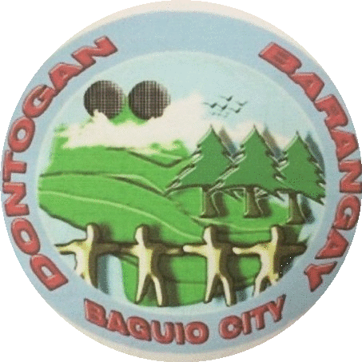

Barangay Dontogan


PROJECTS
List of Recent and Upcoming Projects of the Dontogan Barangay for the community and its immediate needs.
Recent Projects
| Name of the Project | Amount(₱) | Source of Fund | Remarks |
|---|---|---|---|
| Farm to Market Road at Purok 7, Dontogan Barangay | ₱2,000,000 | Congressional Fund | (Resolution) |
| Concreting of Alley at Purok 8, Dontogan Barangay | ₱100,000 | 20% Dev, Fund, Annual Budget | Implemented |
| Construction of Pathway and Riprapping at Purok 3, Dontogan Barangay | ₱200,000 | LDF, addressed to Coun. Peter Fianza | (Resolution) |
| Improvement and Concreting of Steps and Alley with Railings at Purok 9, Dontogan Barangay | ₱200,000 | LDF, addressed to Coun. Joel Alangsab | (Resolution) |
| Energization of Day Care Center II, purchase of wire, bulb & switch box | ₱200,000 | Dir. Jun Orca (BENECO) | (Resolution) |
| Land Identificatio of the Site of Fire Station at Dontogan Barangay,beside Police Station 10 with an area of 328 sq.meters in accordance with DENR Survey | ₱200,000 | LDF, addressed to Coun. Fred Bagbagen | (Resolution) |
| Replacement of busted and damage streetlights and fixtures | ₱150,000 | YTF Budget | (Resolution) |
| Purchase of BDRRMC supplies and equipment to be used emergencies and calamities | ₱150,000 | BDRRMF | Requested to BENECO |
| Conduct of Regualr Oplan-Taob to prevent Occurence of Dengue Fever | ₱150,000 | BDRRMF | In coordination with DOH |
| Bayanihan/Clean and Green Program | ₱150,000 | BDRRMF | Participated by Brgy. Officials, appointed volunteers and residents |
Upcoming Projects
| Name of the Project | Amount(₱) | Source of Fund |
|---|---|---|
| Senior Citizen's Office | ₱2,000,000 | Congressional Fund |
| Improvement of Tanod Outpost at Purok 4, Dontogan Barangay | ₱1,500,000 | LDF,GF |
| Riprap and Road Concreting at Purok 6 Trello Street, Dontogan Barangay | ₱8,000,000 | CONG. FUND, NDF |
| Canal Improvement at Purok 3, Dontogan Barangay | ₱4,000,000 | LDF,GF |
| Improvement of Barangay Hall, Dontogan Barangay | ₱10,000,000 | LDF, GF, NDF |
| Resolution addressed to Baguio Water District (BWD) for Installation of main pipe line connected to common water meter tank which will supply water to areas who do not have access to safe water (BWD) | ₱2,500,000 | NDF, LDF, Congressional Fund |
Conduct of Training & Skills Program
|
₱500,000 | GEN. FUND, YTF Budget, NGO's |
| Resolution addressed to City Planning & DENR-MGB for Installation of Signage's on areas prone to erosion and not suitable for dwelling at Purok 1-10, Dontogan Barangay | ₱100,000 | LDF GEN. FUND |
| Conduct of Nutrition Education Class Distribution of Multi-vitamins to identify malnourished children & supplementary fedding | ₱300,000 | LDF, NGO, GEN. FUND |
| Improvement of Natural Drain | ₱5,000,000 | CDRRMC |